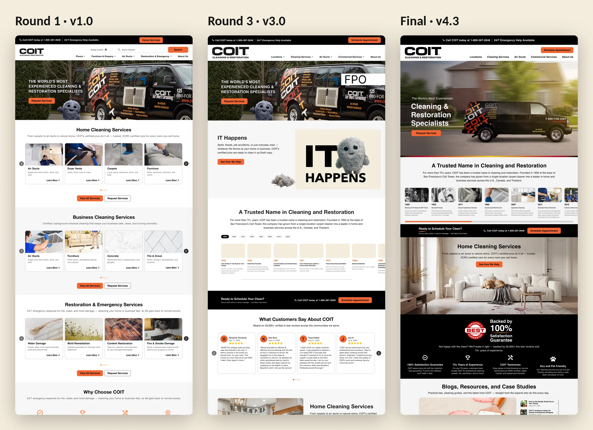
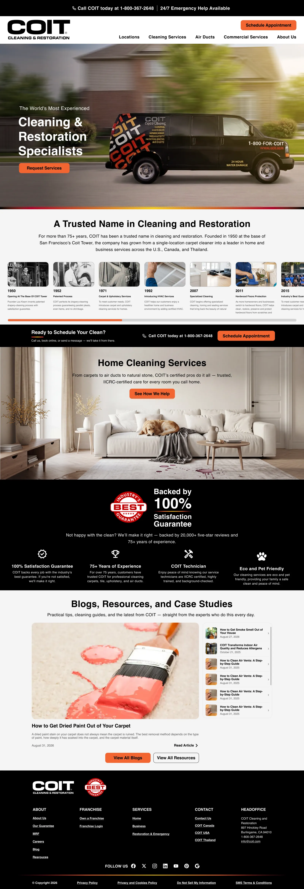
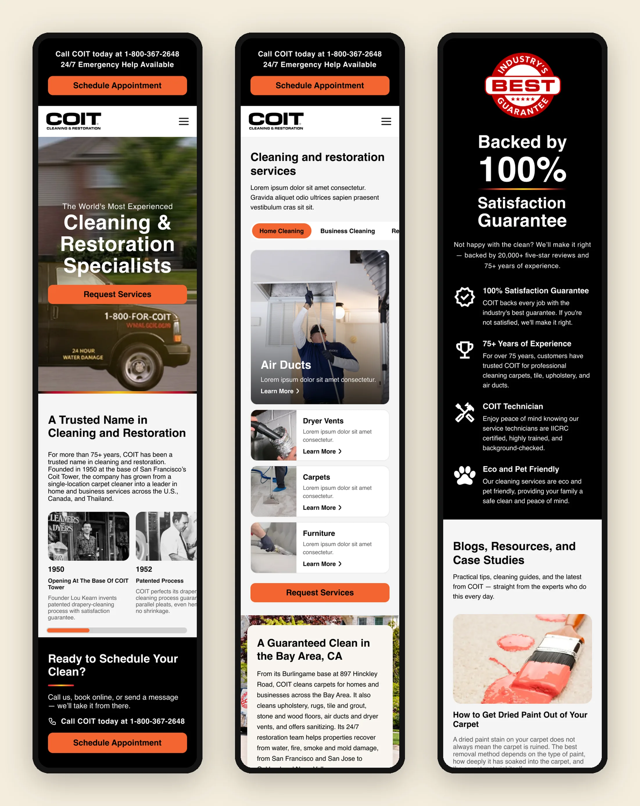
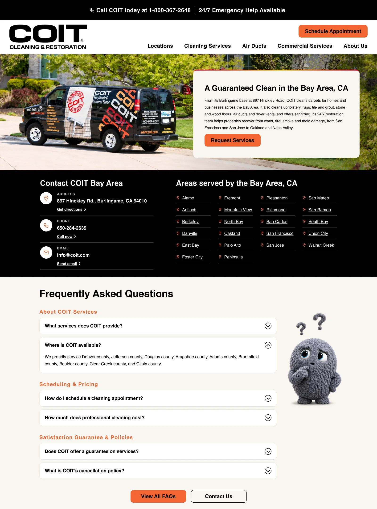

Problem Statement
How might we help homeowners, businesses and people in an emergency find the right COIT service and book or call in seconds, on any screen?
Role & Responsibilities
I own the UX and UI of the redesign: the homepage, the navigation and information architecture, and a reusable location page, each designed for desktop and mobile. I turn client feedback into the next round, explore layout options for the team and the client to choose from, and keep every page consistent with COIT’s brand and accessible.
Starting from scratch
The first homepage, v1.0, followed a familiar pattern: a carousel for each service line (Home Cleaning, Business Cleaning, Restoration & Emergency), a location map, reviews and blogs. It was complete, but long, and on a phone the important actions sat far down the page.
Each review with COIT tightened it. By v3.0 the page told COIT’s story and trust signals earlier. By v4.3 the hero, the 75-year history timeline, a single “Ready to schedule your clean?” banner and the 100% satisfaction guarantee carry the page, and the call and booking actions are always one tap away.


Designing faster with Claude
I used Claude connected to Figma as a design partner that works directly in the file. I set the direction, the content and the rules, and Claude built the frames for me to review, edit and choose from:
- Mobile from desktop: Claude rebuilt full desktop pages at 390px, reusing existing mobile sections where the content matched and redesigning the desktop-only sections for small screens, with the text copied straight from the desktop frames.
- Options to compare: for sections like the Bay Area introduction, Claude built three layouts side by side. I picked one, cut it down and rewrote the copy before it went into the page.
- States that take time: open states for the new desktop mega-menu and the mobile navigation, built from the same patterns so they stay consistent.
- A design canvas: a shared canvas with artboards for resource-page options, hero typography options, the design system and a brand style guide, so the team could compare directions in one place.
The speed came from skipping the repetitive build work, not the design decisions. Every layout, edit and piece of copy still went through me before anyone else saw it.
Mobile first
On mobile the call and “Schedule Appointment” actions stay at the top of every page, services become sideways-scrolling tabs with one large feature card, and long lists such as the 22 Bay Area service areas fold into two columns. Small orange text uses a darker orange (#B8461C) so it reaches about 5:1 contrast on light backgrounds, while the brand orange stays on buttons and large shapes.

A location page template
COIT serves customers through local locations, so I designed a location page template, starting with the Bay Area: a tabbed services hub, local reviews, a local introduction, contact details with every area served, a video section and FAQs. The same template can be filled in for any location.

Options & Trade-offs
Directions explored
- Option A: One carousel per service line on the homepage. Dropped: too long, and the main actions were buried on mobile.
- Option B: A shorter homepage built on trust (history, guarantee, reviews), with services reached through a clearer navigation and location pages. Chosen.
Trade-offs
Moving services out of the homepage put more weight on the navigation, so the mega-menu and mobile navigation had to be designed and reviewed alongside the homepage rather than after it. Brand feedback also shaped the details: COIT asked us to avoid anything that read as caution tape or a flame, so the accent lines became a soft multi-colour gradient.
Where it stands
The redesign is in progress. So far: seven homepage rounds from v1.0 to v4.3, a new navigation for desktop and mobile, and a location page template, each designed for desktop and mobile. Results will be added after launch.